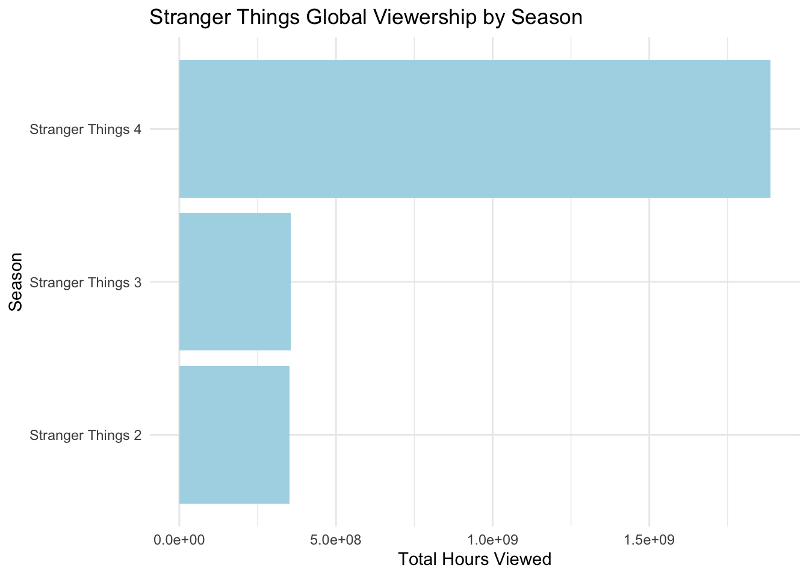
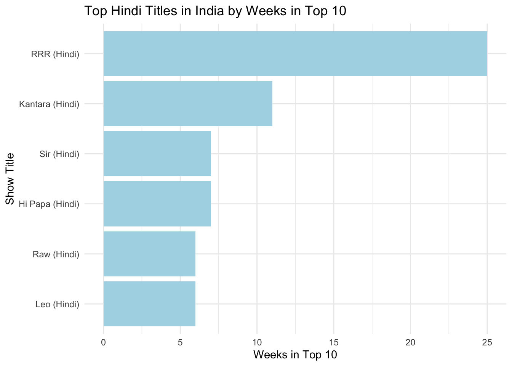
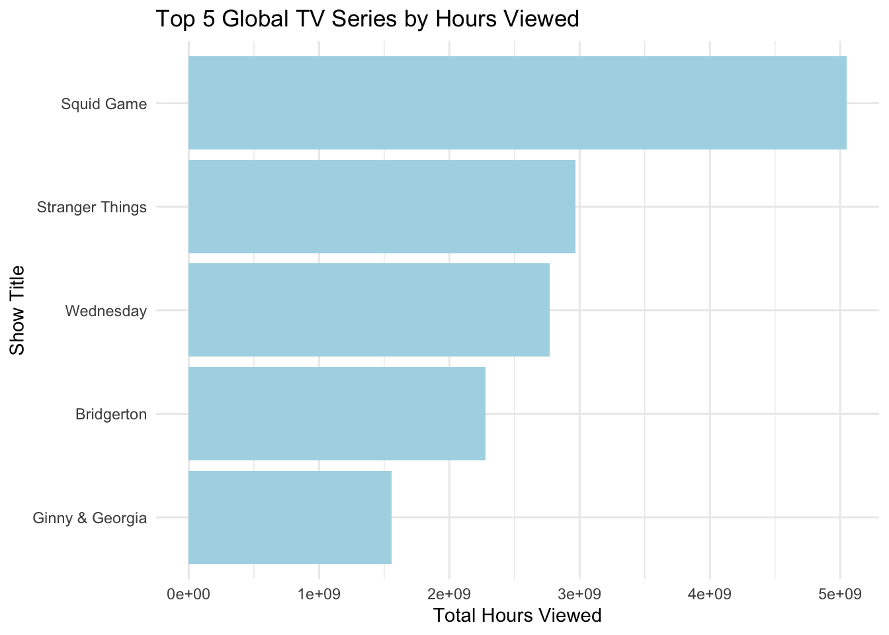

This project analyzes Netflix’s public Top 10 data to highlight the platform’s most successful original films and TV shows. By examining global and country-level viewership trends, we aim to identify standout content and quantify its impact, providing insights that support Netflix’s strategy of producing high-quality, globally appealing entertainment.
── Column specification ────────────────────────────────────────────────────────
Delimiter: "\t"
chr (3): category, show_title, season_title
dbl (5): weekly_rank, weekly_hours_viewed, runtime, weekly_views, cumulativ...
date (1): week
ℹ Use `spec()` to retrieve the full column specification for this data.
ℹ Specify the column types or set `show_col_types = FALSE` to quiet this message.
Code
# Task 2: Fix "N/A" values in season_title for GLOBAL_TOP_10GLOBAL_TOP_10 <- GLOBAL_TOP_10 |>mutate(season_title =if_else(season_title =="N/A", NA, season_title),runtime_minutes =round(60* runtime))# Task 3: Import per-country dataset, automatically treating "N/A" as NACOUNTRY_TOP_10 <-read_tsv(COUNTRY_TOP_10_FILENAME, na ="N/A")
Rows: 409900 Columns: 8
── Column specification ────────────────────────────────────────────────────────
Delimiter: "\t"
chr (5): country_name, country_iso2, category, show_title, season_title
dbl (2): weekly_rank, cumulative_weeks_in_top_10
date (1): week
ℹ Use `spec()` to retrieve the full column specification for this data.
ℹ Specify the column types or set `show_col_types = FALSE` to quiet this message.
# A tibble: 4 × 3
category show_title total_hours
<chr> <chr> <dbl>
1 Films (English) KPop Demon Hunters 523700000
2 Films (Non-English) Society of the Snow 235900000
3 TV (English) Stranger Things 2967980000
4 TV (Non-English) Squid Game 5048300000
Ans:
Films (English): KPop Demon Hunters with 523,700,000 hours of global viewership.
Films (Non-English): Society of the Snow with 235,900,000 hours.
TV (English): Stranger Things with 2,967,980,000 hours.
TV (Non-English): Squid Game with 5,048,300,000 hours.
Question 5: Which TV show had the longest run in a country’s Top 10? How long was this run and in what country did it occur?
Ans: The TV show with the longest run in a country’s Top 10 is Money Heist, which stayed for 127 weeks in Pakistan.
Question 6: Netflix provides over 200 weeks of service history for all but one country in our data set. Which country is this and when did Netflix cease operations in that country?
Code
q6_result <- COUNTRY_TOP_10 %>%group_by(country_name) %>%# ⬅️ change this to the actual column name in your datasummarise(total_weeks =n_distinct(week),last_week =max(as.Date(week), na.rm =TRUE),.groups ="drop" ) %>%filter(total_weeks <200) %>%arrange(total_weeks) %>%slice(1)q6_result
# A tibble: 1 × 3
country_name total_weeks last_week
<chr> <int> <date>
1 Russia 35 2022-02-27
Ans:The country with fewer than 200 weeks of Netflix Top 10 history is Russia, which has 35 weeks of data and was last observed on 2022-02-27.
Question 7: What is the total viewership of the TV show Squid Game?
Answer: In the US, 0 films reached Number 1 without originally debuting there. The most recent film to do this is NA.
Question 10:Which TV show/season hit the top 10 in the most countries in its debut week? In how many countries did it chart?
Code
library(dplyr)library(lubridate)top_debut <- COUNTRY_TOP_10 %>%filter(str_detect(category, "TV")) %>%group_by(show_title, season_title, country_name) %>%summarise(debut_week =min(week), .groups ="drop") %>%count(show_title, season_title, debut_week, name ="num_countries") %>%slice_max(num_countries, n =1)# Extract values for Quarto inline codetop_show <- top_debut$show_titletop_season <- top_debut$season_titletop_countries <- top_debut$num_countriestop_week <- top_debut$debut_weektop_show
[1] "Emily in Paris"
Code
top_season
[1] "Emily in Paris: Season 2"
Code
top_countries
[1] 94
Code
top_week
[1] "2021-12-26"
Ans:The TV show/season that hit the top 10 in the most countries in its debut week is Emily in Paris ( Season: Emily in Paris: Season 2 ), debuting on 2021-12-26. It charted in 94 countries.
Code
# Show the structure of the datasetglimpse(COUNTRY_TOP_10)
Stranger Things Season 5: Global Phenomenon Returns!
Code
library(dplyr)library(scales)library(stringr)# Aggregate Stranger Things data from global top 10stranger_data <- GLOBAL_TOP_10 %>%filter(str_detect(show_title, regex("Stranger Things", ignore_case =TRUE))) %>%summarise(total_hours =sum(weekly_hours_viewed, na.rm =TRUE),total_weeks =max(cumulative_weeks_in_top_10, na.rm =TRUE) )# Prepare inline variablesst_hours <-comma(stranger_data$total_hours)st_weeks <- stranger_data$total_weekslibrary(ggplot2)# Break down hours by season, drop NAsst_by_season <- GLOBAL_TOP_10 %>%filter(str_detect(show_title, regex("Stranger Things", ignore_case =TRUE))) %>%filter(!is.na(season_title)) %>%# <--- drop missinggroup_by(season_title) %>%summarise(season_hours =sum(weekly_hours_viewed, na.rm =TRUE),.groups ="drop" ) %>%arrange(desc(season_hours))# Plotggplot(st_by_season, aes(x =reorder(season_title, season_hours), y = season_hours)) +geom_col(fill ="lightblue") +coord_flip() +labs(title ="Stranger Things Global Viewership by Season",x ="Season",y ="Total Hours Viewed" ) +theme_minimal()

Code
st_hours
[1] "2,967,980,000"
Code
st_weeks
[1] 19
Netflix’s beloved series Stranger Things is back for its fifth and final season! The previous four seasons have amassed a staggering 2,967,980,000 hours of global viewership and dominated the Top 10 for 19 cumulative weeks. Compared to other English-language TV shows, Stranger Things remains one of Netflix’s most influential hits, setting a high bar for Season 5.
Netflix Captures India’s Heart with Record-Breaking Hindi Hits
Code
library(dplyr)library(stringr)# Filter Hindi shows/films in Indiahindi_india <- COUNTRY_TOP_10 %>%filter(country_name =="India") %>%filter(str_detect(show_title, regex("Hindi", ignore_case =TRUE)) |str_detect(season_title, regex("Hindi", ignore_case =TRUE))) %>%group_by(show_title) %>%summarise(weeks_top10 =max(cumulative_weeks_in_top_10, na.rm =TRUE),peak_rank =min(weekly_rank, na.rm =TRUE),.groups ="drop" ) %>%arrange(peak_rank, desc(weeks_top10))# Top Hindi title by longest runtop_hindi <- hindi_india %>%slice(1)# Titles that never appeared in UShindi_not_us <- hindi_india %>%anti_join( COUNTRY_TOP_10 %>%filter(country_name =="United States") %>%select(show_title) %>%distinct(),by ="show_title" )# Inline valuesnum_hindi_titles <-nrow(hindi_india)top_hindi_title <- top_hindi$show_titletop_hindi_weeks <- top_hindi$weeks_top10hindi_not_us_count <-nrow(hindi_not_us)library(ggplot2)top5_hindi <- hindi_india %>%slice_max(weeks_top10, n =5)ggplot(top5_hindi, aes(x =reorder(show_title, weeks_top10), y = weeks_top10)) +geom_col(fill ="lightblue") +coord_flip() +labs(title ="Top Hindi Titles in India by Weeks in Top 10",x ="Show Title",y ="Weeks in Top 10" ) +theme_minimal()

Code
num_hindi_titles
[1] 30
Code
top_hindi_title
[1] "RRR (Hindi)"
Code
top_hindi_weeks
[1] 25
Code
hindi_not_us_count
[1] 29
Netflix is seeing strong momentum in India, where 30 Hindi-language titles have reached the Top 10. The standout hit, RRR (Hindi), stayed in the Top 10 for 25 weeks, making it one of Netflix India’s longest-running successes. Notably, 29 Hindi titles were popular in India without ever charting in the US — proof of Netflix’s ability to create regionally resonant content.
Netflix TV Shows Dominate with Record Global Viewing
Code
library(dplyr)library(stringr)# Summarize top global TV showsglobal_tv <- GLOBAL_TOP_10 %>%filter(str_detect(category, "TV")) %>%group_by(show_title) %>%summarise(total_hours =sum(weekly_hours_viewed, na.rm =TRUE),weeks_top10 =max(cumulative_weeks_in_top_10, na.rm =TRUE),.groups ="drop" ) %>%arrange(desc(total_hours))# Inline valuestop_tv_title <- global_tv$show_title[1]top_tv_hours <- global_tv$total_hours[1]top_tv_weeks <- global_tv$weeks_top10[1]total_tv_titles <-nrow(global_tv)top5_tv <- global_tv %>%slice_max(total_hours, n =5)ggplot(top5_tv, aes(x =reorder(show_title, total_hours), y = total_hours)) +geom_col(fill ="lightblue") +coord_flip() +labs(title ="Top 5 Global TV Series by Hours Viewed",x ="Show Title",y ="Total Hours Viewed" ) +theme_minimal()

Code
top_tv_title
[1] "Squid Game"
Code
top_tv_hours
[1] 5048300000
Code
top_tv_weeks
[1] 32
Code
total_tv_titles
[1] 1035
Netflix continues to set the standard for global television, with 1035 different TV series breaking into the worldwide Top 10. The standout hit, Squid Game, has amassed over 5,048,300,000 hours viewed and stayed in the Top 10 for 32 weeks, underscoring the platform’s unmatched reach. With this momentum, Netflix TV is not only entertaining audiences everywhere but also proving the long-term strength of serialized storytelling in the streaming era.